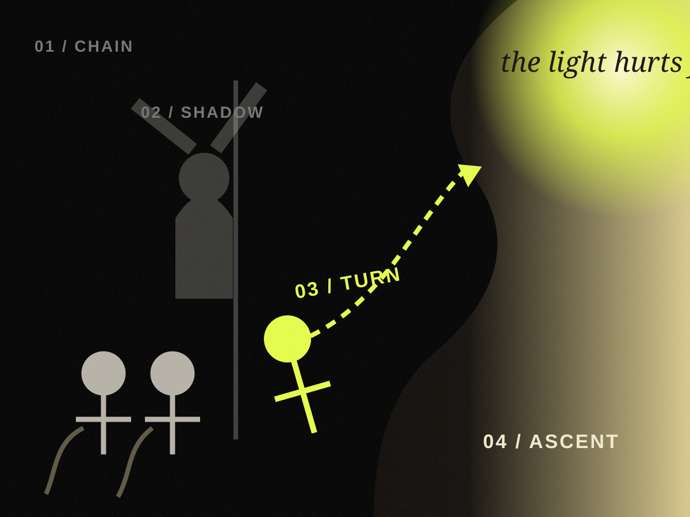

THE CLASS
OF ROWDIES.
Before this page tells you anything, watch what changes when a class stops being an audience.
If YouTube refuses the embed, the leaking-glass exit will unlock after 30 seconds.
The film ends. The room does not.
Same walls. Same timetable. Same people. Then the students stop behaving as though audience is the only role available.
Was the cage altered—or did someone notice the door?
Both explanations can survive. For now, choose the one you distrust less.

The building teaches you how to move.
Piranesi lets the architecture swallow the people. Stairs, platforms, bridges, machinery: the structure decides which movements look imaginable.
Psychology is less theatrical, but it asks a related question. Social conditions can support or frustrate a person’s sense of autonomy and initiative.
If a room teaches passivity for long enough, who owns the first move when it finally opens?

You can walk all day and remain in the circle.
Van Gogh’s prisoners are in motion. That is what makes the image worse. Movement is not the same thing as direction; activity is not automatically authorship.
Learned helplessness gives us one possible lens: repeated uncontrollability can reduce later attempts to act, even after some control returns.
Can yesterday’s cage survive as today’s habit?
Both answers survive.
A room can close people down. A person can carry the closed room with them after it opens.
What if the bars are comfortable?
Not every force pushes. Some invite. Some flatter. Some simply make one next move much easier than all the others.
because you watched...
everyone is seeing this
you do not need to choose
just one more
The cage knows what you like.
The bars are gold on purpose. Recommendation, autoplay, alerts and endless scroll do not have to issue commands. They can simply make continuing cheaper than stopping.
APA guidance is deliberately more careful than “phones are bad”: online experience is shaped by both what users choose and what platforms make easy, visible and repeatable.
When does a designed default begin impersonating an intention?

A prison can applaud you.
Ensor’s crowd is theatrical, masked, comic and difficult to read. Everyone has a face. It is less obvious who owns it.
Belonging is not a defect. Approval is not poison. But applause makes a strange steering wheel: it can reward motion long before anyone asks where the movement is going.
If everyone wants the same thing, how many people chose it?
Influence is real. Destiny is a larger claim.
Pressure can shape a choice without becoming the person who made it.
What if the cage needs your help?
In the sixteenth century, La Boétie asked why people sometimes participate in sustaining power that limits them. Different problem. Useful disturbance.
Force matters. Habit matters. Reward matters. So does the small cooperation that makes a pattern easier to repeat tomorrow.
What happens when nobody is stopping you?
The external pressure goes quiet. The smaller gap remains: the distance between intending a move and making one.

Tomorrow is a beautiful hiding place.
Goya did not make a productivity poster. The sleeping figure is surrounded by creatures that arrive when reason withdraws. Here, the image becomes a question rather than an instruction.
Intentions often fail to become actions. Sometimes waiting is rest. Sometimes it is avoidance. From the outside they can look identical.
Who has the key while you wait to feel ready?
THEN Y
A rule can be a cage. Or a handrail.
One psychological tool is an implementation intention: an if-then plan that links a future cue to a response chosen in advance.
“If discussion opens, then I ask one real question.” “If I disagree, then I say why.” The interesting part is not the rule. It is who authored it, and whether it can be revised.
Can structure sometimes protect a choice from the mood of the moment?
A handrail and a bar can be made of the same metal.
From across the room, discipline and obedience can look almost identical. One question changes the picture: who wrote the rule?
The door is open.
Kafka gives us a man who waits beside an open doorway for almost his entire life. The gatekeeper is real. The fear is real. So is the waiting.
Nothing here requires pretending that authority is imaginary. The horror is narrower: a barrier can be outside you, and then slowly acquire a second address inside you.

YOUR
HEAD
The prisoners begin actually chained.
That matters. Plato’s cave does not begin with a motivational failure. It begins with constraint. The unsettling part comes later, when another orientation becomes possible.
view the 1604 cave engraving ↗Some constraints are real. Freedom does not begin by pretending otherwise.
A repeated view can begin to feel like the whole world. Familiarity impersonates necessity.
The first movement is not escape. It is orientation: turning toward something that makes the familiar story less complete.
The light gives no instructions. It only makes more of the room visible. Possibility can be disorienting precisely because it does not choose for you.
No map is coming.
Nothing here tells you what to do next. That is not the same as nothing being possible.
The landscape remains larger than you. You are simply no longer only scenery inside it.
A room is partly made from what people bring into it.
The teacher still matters. The timetable matters. Other people matter. None of that disappears.
But a room also changes when somebody brings an obsession, a disagreement, a question, a story, a refusal, an experiment—or chooses not to.
Neither silence nor participation proves anything by itself. The interesting part is whether the choice feels like yours.
When the door opens, who decides whether you turn?
Some walls are real. Some habits outlive walls. Some restraints are comfortable enough that we help maintain them. You are the only useful witness to which is which.
The page does not punish you.
The door stays where it was. Nothing drags you through it. From inside, a wall and a decision can sometimes feel surprisingly similar until one of them is named.
No applause. No pledge.
The room is still the room. The difference is smaller: the wall is no longer the entire field of view.